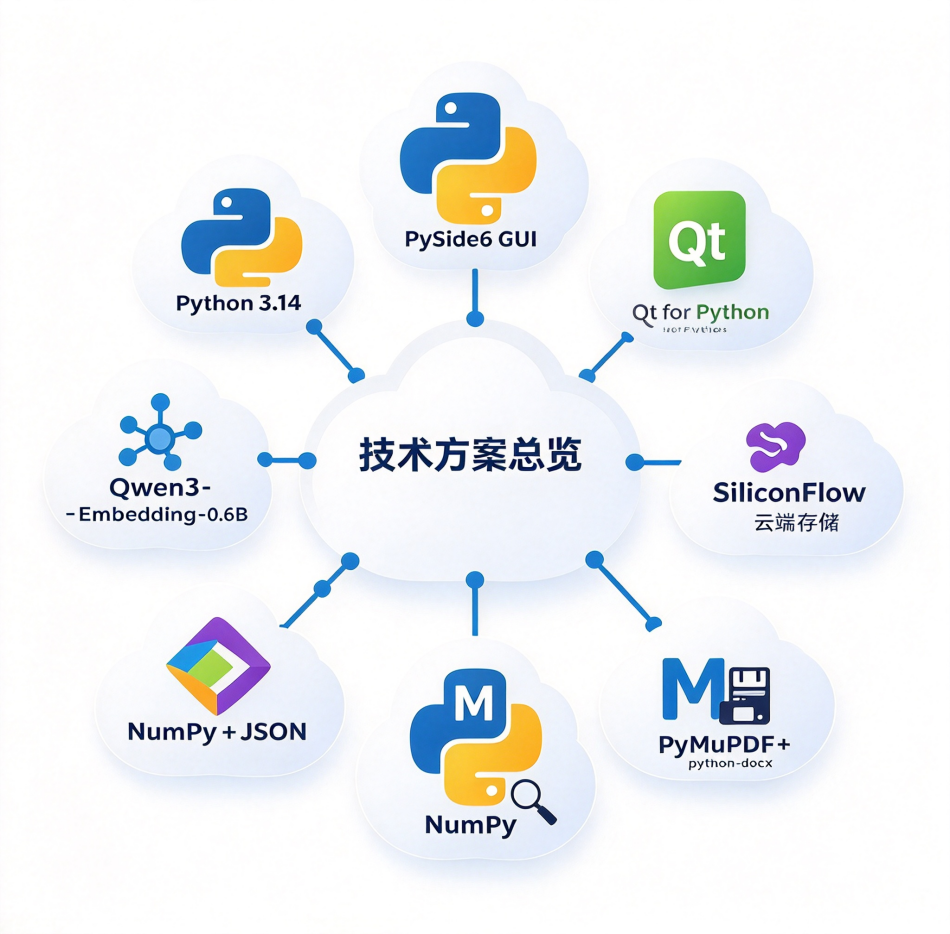

融合大语言模型与本地规范知识库（RAG），覆盖知识问答、文件审核、桩位成图、实时监控、风险预警、资料归档的全过程质量管理工具

从规范知识检索到竣工资料归档，一个桌面软件完成
规范标准（PDF）与项目案例（Word）自动解析切块、向量化入库，构建本地专业知识库。
基于知识库回答岩土专业问题，答案逐条标注规范名称与条款号，可溯源、不臆造。
建设、勘察、设计、施工、监理、检测六阶段分类，支持批量上传与系统默认程序打开。
逐段对照规范条文判定合规性，按勘察规范核查必备章节完整性，意见可导出 Word 报告。
CSV 批量导入桩位坐标自动成图，滚轮缩放、拖拽平移，风险等级颜色联动标注。
钻进速度、电流、流量等参数仪表盘同屏展示，长螺旋钻具深度标尺随进尺实时伸缩。
27 项固定表头批量导入施工记录，按日期与设备筛选，环形进度对比设计总量。
对桩位偏差、垂直度、桩长、充盈系数、电流分级预警，评级结果联动总平面图。
依技术规程生成 29 项归档清单，自动匹配已有文件、标注缺失项，支持「不涉及」与恢复。
持续向下滚动，逐一查看九大模块的实际运行界面
云端大模型负责推理，工程数据全部本地处理
绿色免安装，解压即可运行；内置详细使用手册（docx）
从 GitHub Releases 下载CFGPileManage.exe 运行.env 中填入大模型 API Key知识库文档与项目数据均保存在程序目录的 data/ 文件夹，离线可用、数据不出本机。